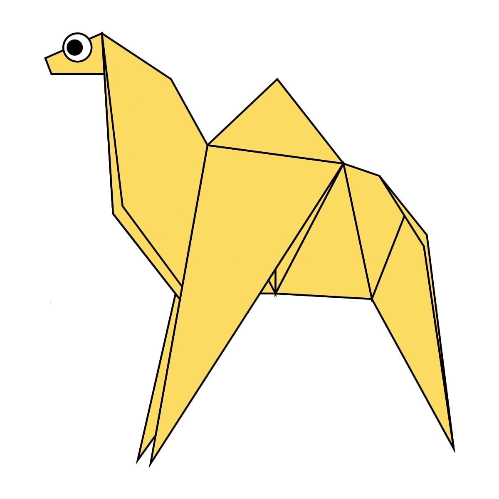
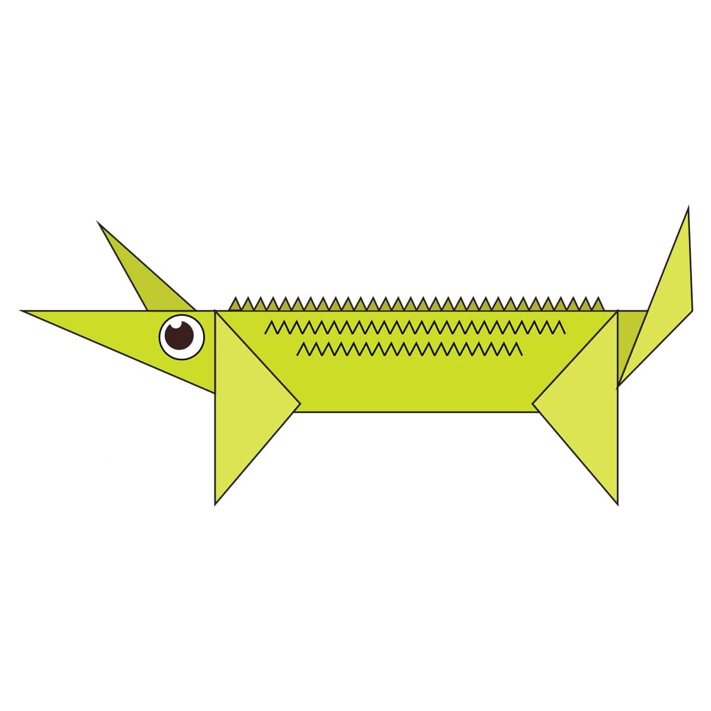
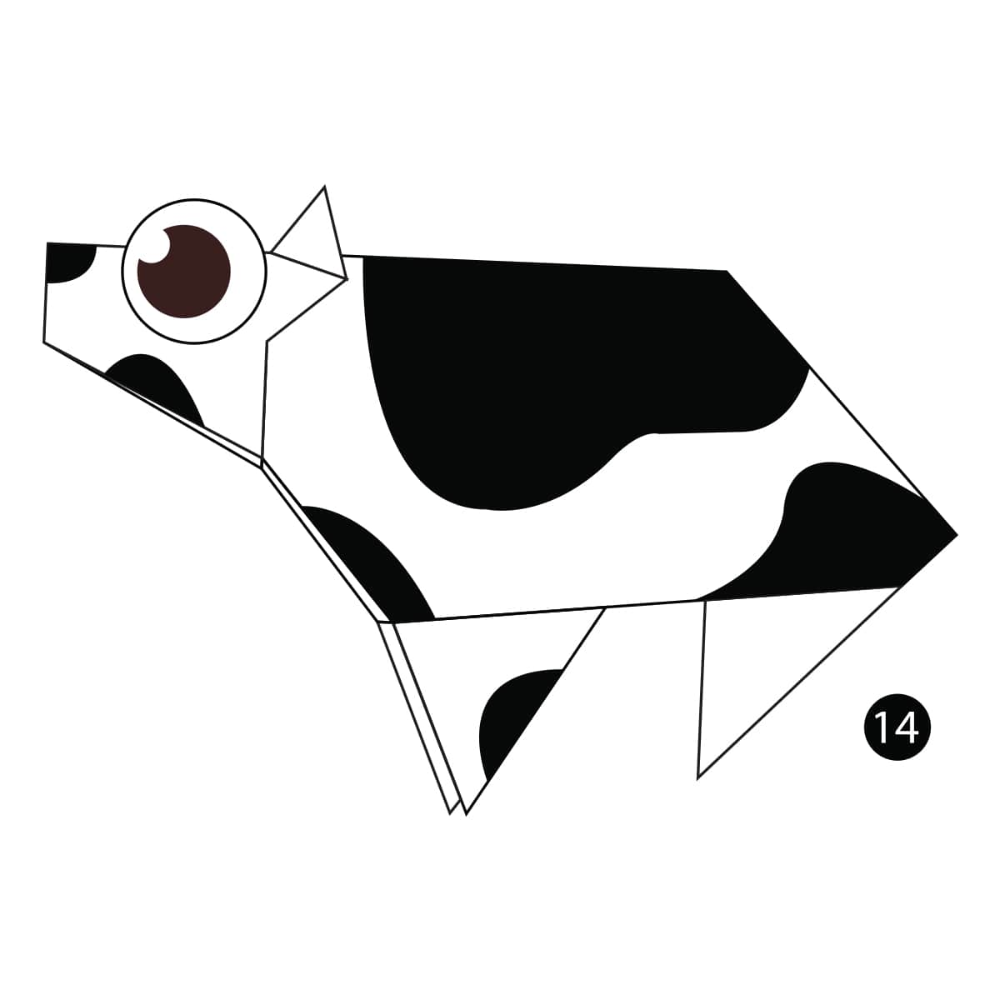
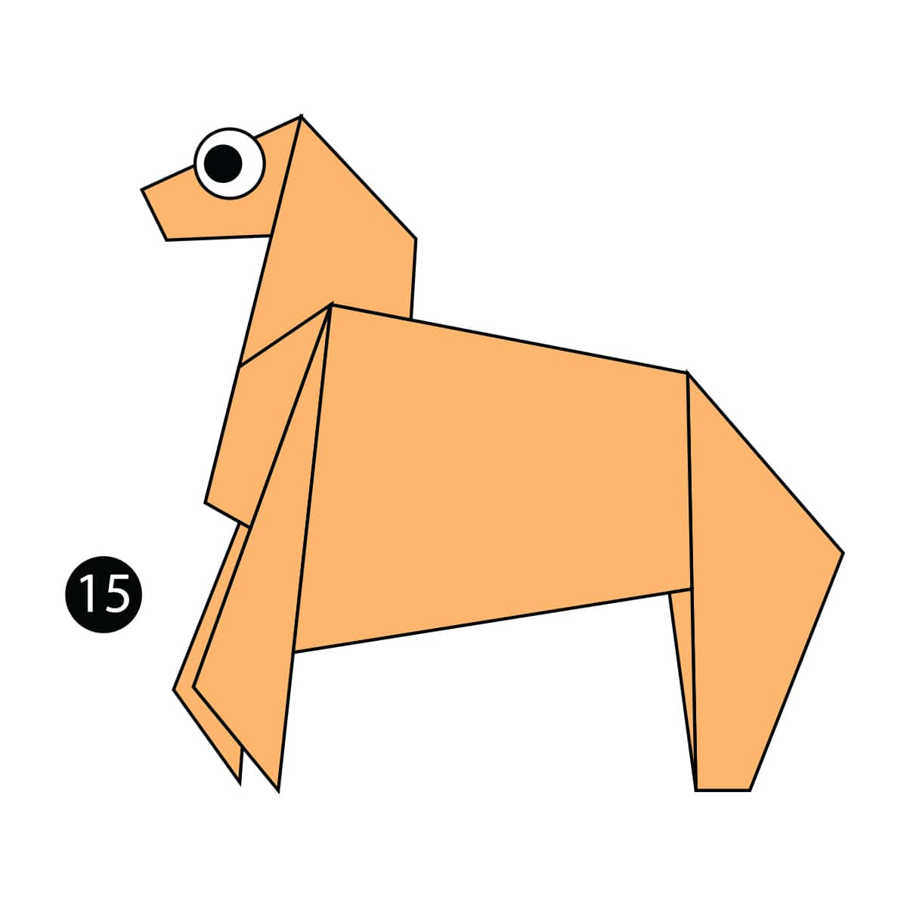

1.Chameleon

- Almost Half the Population Lives in Madagascar
- "Chameleon" Means "Ground Lion"
- Oldest Identified Lived 60 Million Years Ago
2.Camel

- There are two types of camels:
One humped or “dromedary” camels and
two humped Bactrian camels. - Camels have three sets of eyelids and two rows of eyelashes to keep sand out of their eyes.
- Camels have thick lips which let
them forage for thorny plants
other animals can't eat.
3.Crocodile

- Crocodiles are reptiles
- The physical characteristics of crocodiles make them good predators.
- Crocodiles are fast over short distances.
4.Giraffe

- Giraffes are the tallest mammals on Earth
- A giraffe's neck is too short to reach the ground.
- Giraffes only need to drink once every few days.
5.Cow

- Cows are very social and don’t like to be alone.
- Cows have no upper front teeth.
- Cows can see almost 360 degrees.
6.Horse

- Horses can run shortly after birth.
- Horses have around 205 bones in their skeleton.
- Horses gallop at around 27 mph.
7.Rhino

- Black and white rhinos are both, in fact, grey
- Their horn is made from the same stuff as our fingernails.
- Rhinos have poor vision.
8.Panda

- Their eyes are different to normal bears.
- Cubs are well protected in their first month.
- Bamboo is critical to their diet.